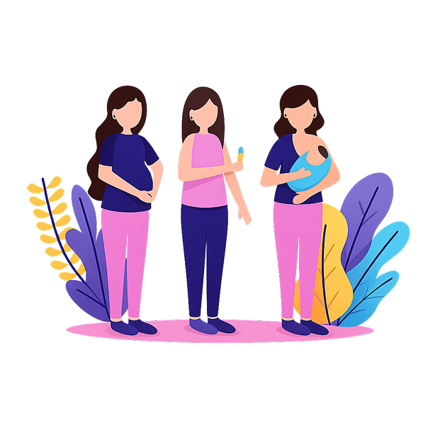
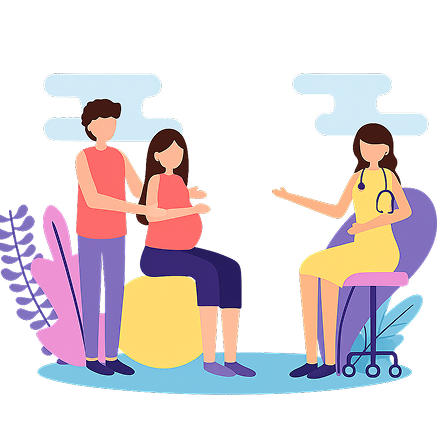

Qui suis-je ?
Je suis Myrtille, sage-femme indépendante diplômée depuis 2014.
Mon parcours a commencé en Afrique, où j'ai exercé dans des contextes exigeants qui m'ont appris l'essentiel : la confiance dans les ressources des femmes et la puissance d'un accompagnement humain et respectueux.
De retour en Suisse, j'ai travaillé en maisons de naissance puis à domicile dans le cadre du suivi global. Ces expériences ont renforcé ma conviction qu'un accompagnement personnalisé et continu transforme profondément l'expérience de la maternité.
Aujourd'hui maman de deux enfants, j'ai enrichi ma pratique par des formations en psychophonie et en naturopathie, afin d'intégrer une approche plus globale, à la fois corporelle, émotionnelle et énergétique.
Les consultations
Paragraphe de consulatation
Le suivi prénatal
Comprend les consultations de grossesse, la surveillance clinique, des conseils nutritionnels adaptés, un accompagnement face aux inconforts fréquents et une préparation à la naissance. L'objectif est d'assurer un suivi structuré tout en tenant compte de votre projet et de vos besoins spécifiques. J'intègre, si vous le souhaitez, l'utilisation du LineQuartz pour soutenir la préparation à l'accouchement ou accompagner certains inconforts pendant la grossesse et le post-partum.

Le suivi post-natal
Vise à soutenir la récupération maternelle et l'adaptation du nouveau-né. J'accompagne les premiers jours et semaines avec des conseils en allaitement, un soutien à la parentalité et une attention particulière aux signes nécessitant une orientation spécifique.
